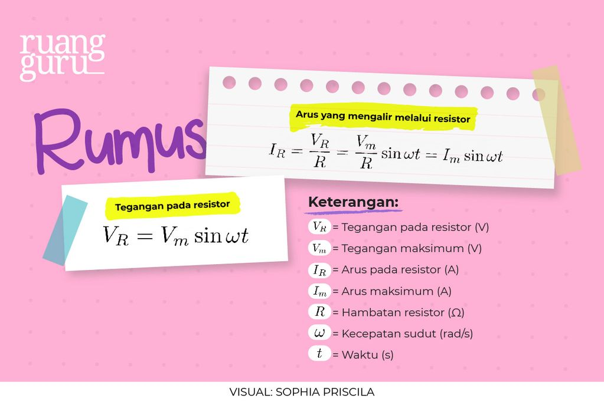
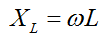
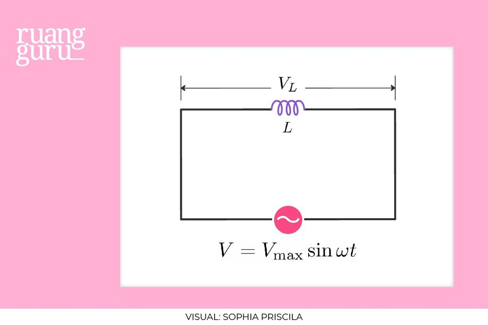
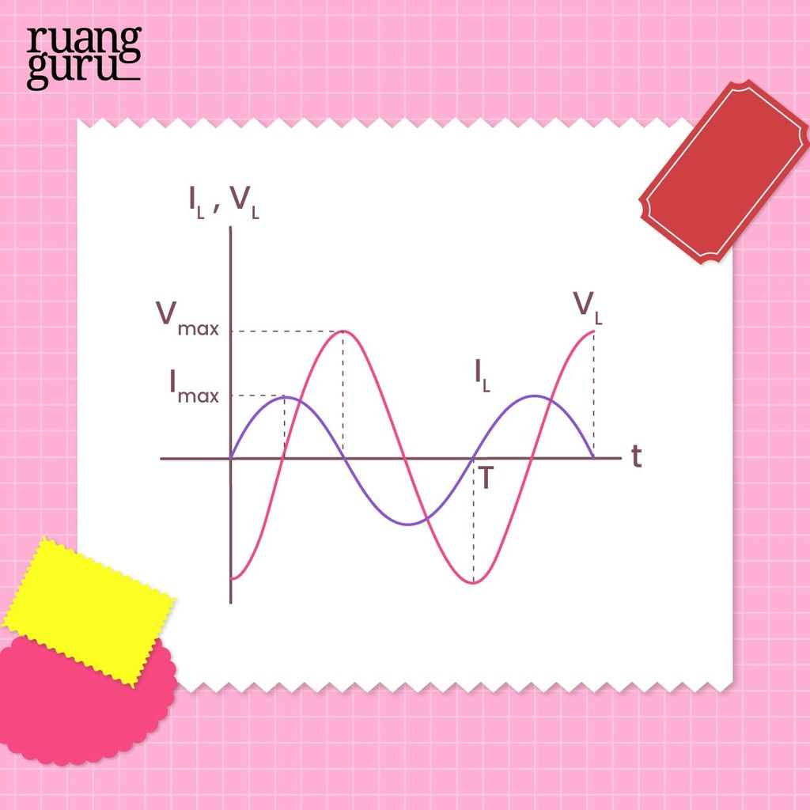
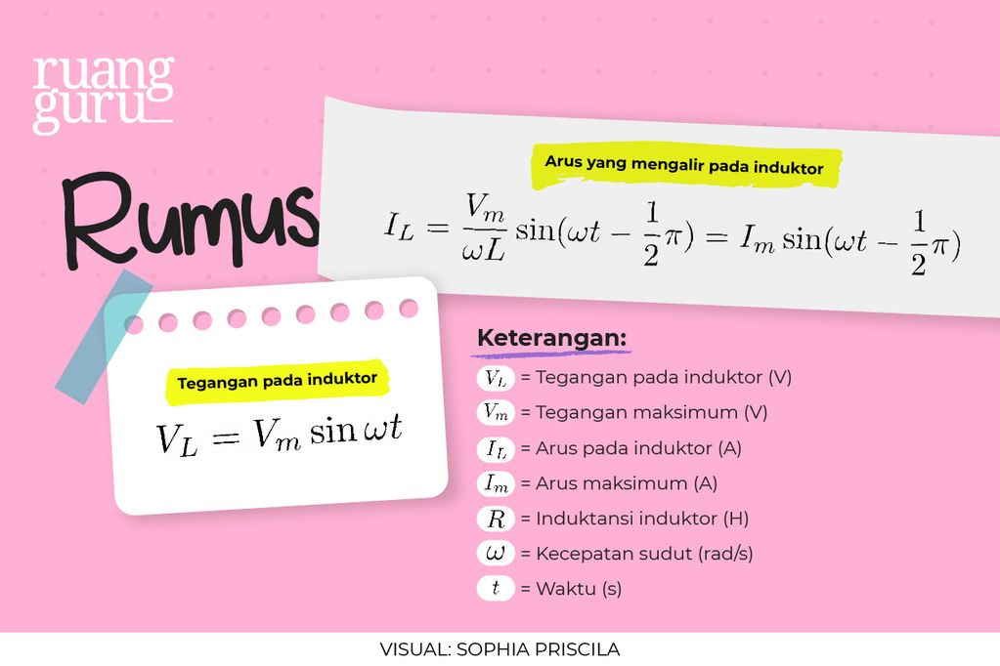
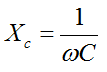
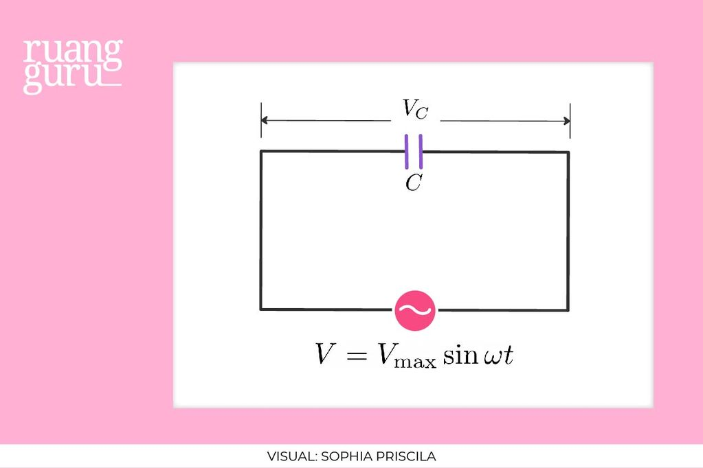
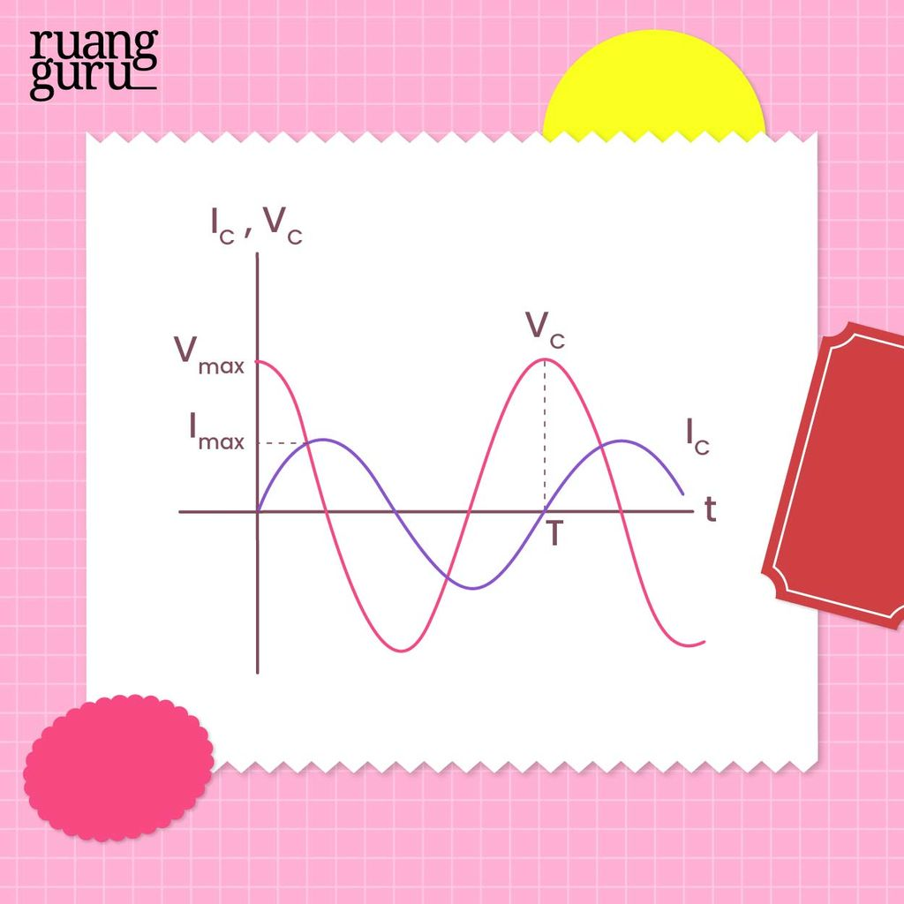
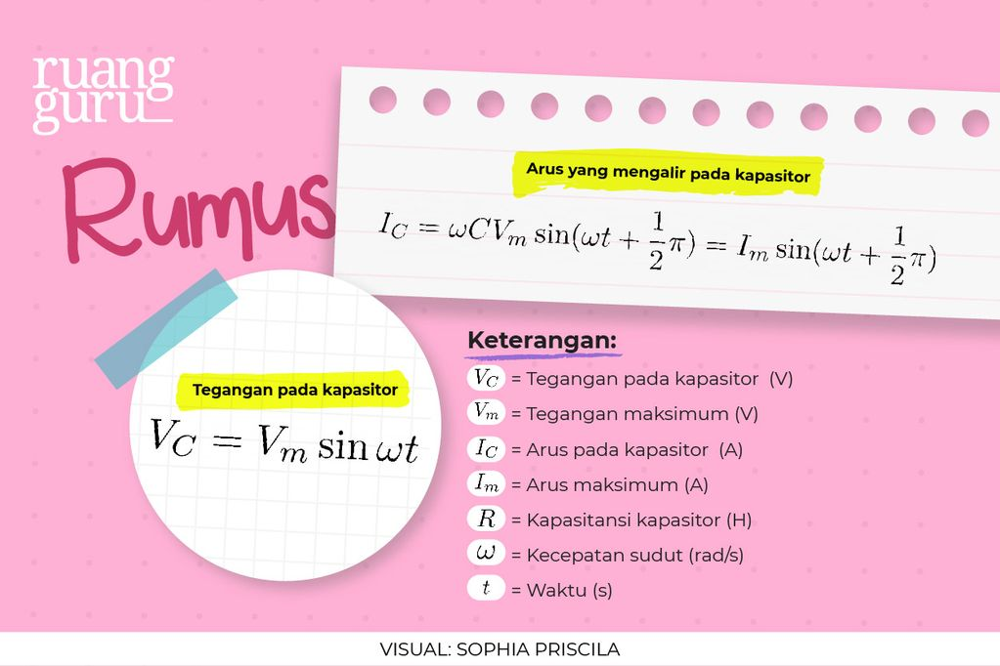

Tahukah kamu, generator pembangkit listrik yang biasa digunakan kalau listrik di rumahmu sedang mati
merupakan salah satu aplikasi dari rangkaian arus bolak-balik?
Ternyata rangkaian arus bolak-balik terdiri dari beberapa jenis yaitu rangkaian resistor, induktor, dan
kapasitor. Lalu, bagaimana keadaan rangkaian-rangkaian tersebut saat dialiri arus bolak-balik? Yuk kita
bahas secara detail ya!
Arus bolak-balik atau alternating current (AC) merupakan arus dan tegangan listrik yang besarnya berubah
terhadap waktu dan mengalir dalam dua arah. Arus bolak-balik biasanya dimanfaatkan untuk peralatan elektronik.
Pada prinsipnya, sumber arus bolak-balik bekerja melalui perputaran kumparan dengan kecepatan sudut
tertentu yang berada dalam medan magnetik. Jenis-jenis rangkaian dalam rangkaian AC adalah rangkaian resistor,
rangkaian induktor, dan rangkaian kapasitor. Sudah pernah belajar tentang hal tersebut? kita bahas dulu
satu persatu ya!
Rangkaian Resistor
Sebuah resistor akan dialiri arus bolak-balik ketika dihubungkan dengan sumber tegangan bolak-balik.
Fungsi rangkaian resistor dalam arus bolak-balik ialah untuk menurunkan potensial listrik dalam rangkaian,
atau sebagai pembatas arus listrik yang masuk. Nah jika sudah dibatasi, arus dan tegangan dalam rangkaian
resistor mempunyai fase yang sama saat terhubung dengan sumber tegangan bolak-balik.
Rangkaian resistor pada arus bolak balik
Grafik hubungan tegangan dan arus terhadap waktu pada resistor
Berdasarkan grafik terlihat bahwa tegangan dan arus berada pada keadaan sefase, yang artinya mencapai nilai
maksimum pada saat yang sama. Sebuah resistor dihubungkan dengan sumber tegangan bolak-balik, besarnya tegangan
pada resistor sama dengan tegangan sumber.
Di bawah ini merupakan rumus tegangan resistor dan arus yang mengalir melalui resistor.

Rangkaian induktor
Sebuah induktor mempunyai hambatan yang disebut reaktansi induktif saat dihubungkan dengan sumber tegangan
bolak-balik. Hambatan atau reaktansi induktif ini bergantung pada frekuensi sudut arus, dan induktansi diri
induktor. Secara singkat, dapat dirumuskan sebagai:

Keterangan:
XL = Reaktansi Induktif (Ω)
ω = Kecepatan sudut (rad/s)
L = Induktansi induktor (H)

Rangkaian induktor pada arus bolak-balik

Grafik hubungan tegangan dan arus terhadap waktu pada induktor
Berdasarkan grafik, terlihat bahwa besar tegangan pada induktor adalah nol saat arus induktornya maksimum,
begitupun sebaliknya. Artinya tegangan pada induktor mencapai nilai maksimum lebih cepat seperempat periode
daripada saat arus mencapai maksimumnya. Rumus tegangan dan arus yang mengalir pada induktor seperti berikut:

Rangkaian Kapasitor
Sebuah kapasitor memiliki karakteristik yang dapat menyimpan energi dalam bentuk muatan listrik ketika
dihubungkan dengan sumber tegangan bolak-balik maupun tegangan searah.
Kapasitor yang dialiri arus bolak-balik akan timbul resistansi semu atau biasa disebut dengan reaktansi
kapasitif. Besar nilai reaktansi kapasitif bergantung pada besarnya nilai kapasitansi kapasitor dan frekuensi
sudut arus atau dapat dirumuskan sebagai:

Keterangan:
Xc = Reaktansi Kapasitif (Ω)
ω = Kecepatan sudut (rad/s)
C = Kapasitansi kapasitor (F)

Rangkaian kapasitor pada arus bolak-balik

Grafik hubungan tegangan dan arus terhadap waktu pada kapasitor
Berdasarkan grafik, terlihat bahwa besar tegangan pada kapasitor adalah nol saat arus kapasitornya maksimum,
begitupun sebaliknya. Artinya tegangan pada kapasitor mencapai nilai maksimum lebih lambat seperempat periode
daripada saat arus mencapai maksimumnya. Rumus tegangan dan arus yang mengalir pada kapasitor seperti berikut:

Latihan soal
Coba Latihan Soal Ini Agar Lebih paham Materinya.
Quiz Time!
Susunan seri hambatan 40Ω dan kapasitor dengan reaktasi kapasitif 30Ω dihubungkan dengan sumber arus bolak-balik,
tegangan efektif 220V. Tegangan efektif pada resistor adalah
Susunan seri hambatan 80Ω dan kapasitor dengan reaktasi kapasitif 60Ω dihubungkan dengan sumber arus
bolak-balik, tegangan efektif 300V. Tegangan efektif pada kapasitor adalah
Suatu rangkaian R-L-C dipasang pada tegangan bolak-balik yang nilai efektifnya 100 V dan
frekuensi 60 Hz. Bila R= 10Ω, L=26,5mH, maka tegangan di ujung-ujung L adalah
Sebuah hambatan 600Ω, induktor 1000Ω dan kapasitor 200Ω disusun seri. Jika susunan ini dihubungkan dengan
sumber tegangan AC 100 V, maka daya rangkaiannya adalah … Watt
Pada rangkaian seri RC, jika tegangan resistif dan tegangan kapasitif masing-masing adalah 50 V dan120 V,
maka tegangan totalnya adalah … V